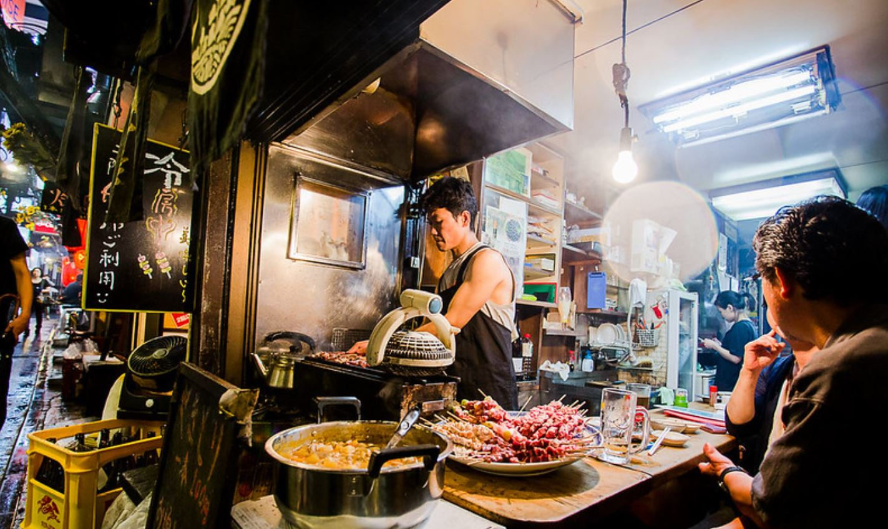

해빙노트 쓰는법
‘나는 가지고 있다(I have~)’로 지금 자신에게 있는 것을 적고 ‘나는 느낀다(I feel~)’로 자신의 감정을 표현하면 된다. 날짜2020-07-26

Having : 적금이 만기가 되어, 어떻게 돈관리를 할지 고민했다. 결과적으로 개인적인 포트폴리오를 짰다. 내가 모았던 돈이 이렇게나 많다니! 그리고, 유투브를 통해서 엄청난 양의 공부가 가능하다는 것도 깨달았다. 유투브 프리미엄을 신청했기 때문에 광고없이 편안하게 볼 수 있었다. 해빙을 하니 경제 공부가재밌어져서 이참에 '전설로 떠나는 월가의 영웅'이라는 책을 구매했다. 도톰한 두께에 읽어보니 생각보다 너무나도 재밌는것 아닌가! 이책을 꼭꼭 씹어 읽다보면 나도 현명한 투자자가 될 수 있음을 느낀다!! 나의 소비에 감사하며!
Feeling : 해빙을 하면 갑자기 불안해지는 상황에도 빨리 감정이 돌아옴을 느낀다. 돈을 어떻게 할지 고민하다가도, 나를 믿고, 이정도의 돈이 있다는 것에 감사함을 느끼니 다음 해야할 일이 술술 떠올랐다. 있음에 감사함이 얼마나 큰 행복인지 느끼며, 매 순간 나의 소비, 나의 감정, 나의 생각에 감사할 수 있음에 감사하다.
날짜2020-07-31
Having : 아주 오랜만에 내가 좋아하는 동기들과 징기스라는 멋진 가게에서 양고기를 먹었다. 양고기가 지글지글 익을동안 맛있는 하이볼비어를 마셨다. 목에 들어가는 순간의 시원함이 느껴져서 너무 좋았다! 양갈비와 양의 특수부위를 먹었는데, 양갈비를 감싼 또띠아와 와사비의 맛이 진하게 느껴졌다. 맛있는 음식앞에서 친구들과 이야기를 하면서 몇번을 웃었는지 몰랐다.
Feeling : 맛을 잘 느끼지 못하는 나에게 이런 특수부위는 살아있음을 느끼게 해주는 감사한 음식이다. 질감을 느끼고 맛을 느끼는 것은 영양가를 섭취하는것이라기 보다 오히려 명상에 가까운것 같다. 나와 함께 맛있는 음식을 함께하는 친구들은 관계의 소중함을 일께워주는 감사한 존재들이다.존재함을 느끼게 해주는 고마운 음식, 친구에게 감사하며!